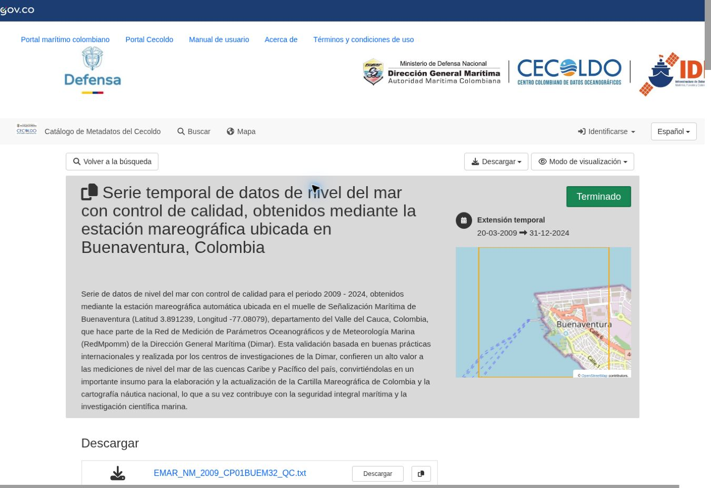
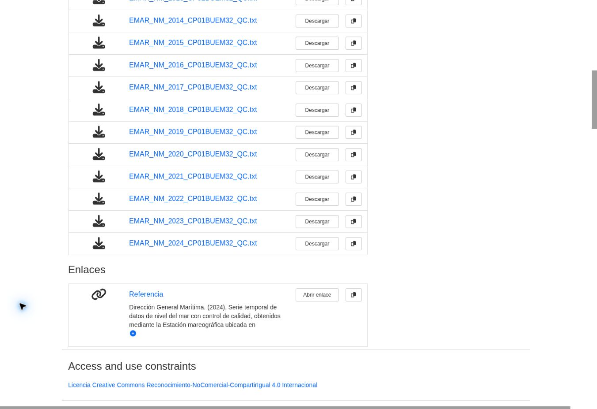

Problemas de regresión.
01 · Una función senoidal para el nivel del mar en Buenaventura.
¿Se puede hacer con CECOLDO?
Sí. El catálogo de estaciones de CECOLDO conecta con series históricas de nivel del mar. Para este ejercicio se utiliza la estación CP01BUEM32, Buenaventura, y el archivo de 2024 con control de calidad: son observaciones instantáneas cada tres horas, en metros. Una senoide permitirá aproximar la oscilación durante un intervalo corto.
El nivel observado contiene la señal de marea y otras variaciones. El ajuste es un modelo exploratorio local, no un pronóstico oficial. Las alturas están referidas al sistema de la estación; no representan directamente la profundidad del agua ni una cota sobre el nivel medio del mar.
1. Descargar los datos
Portal CECOLDO ↗Catálogo de estaciones ↗Ficha de Buenaventura ↗Archivo original 2024 · TXT ↗
- Ruta desde el portal: Estaciones fijas o autónomas → Visor geográfico de datos abiertos (modo diferido). Seleccione Buenaventura y la variable Nivel del mar; abra los datos con control de calidad. La ficha directa anterior permite acceder sin recorrer el mapa.
- En la sección Descargar de la ficha, elija
EMAR_NM_2024_CP01BUEM32_QC.txt. Use el enlace del archivo de datos; el botón superior «Descargar registro» corresponde al metadato. Si el navegador abre el TXT, guárdelo con Ctrl+S.
La ficha consultada cubre 2009–2024. Para repetir exactamente esta actividad use el archivo de 2024, aunque el catálogo añada otros años.


2. Separar y filtrar las columnas
Que el archivo se abra en Bloc de notas es normal: es una tabla de texto separada por tabulaciones. No es necesario acomodar los números ni copiar cada columna a mano.
Ruta rápida: preparar el TXT aquí
- Seleccione el archivo original descargado. Deje enero completo para obtener tanto el ajuste como los datos posteriores.
- Pulse Separar y filtrar. La herramienta conserva QF = 1 (bueno), excluye los datos faltantes y deja únicamente tiempo en horas y nivel en metros.
- Pulse Copiar ajuste (0–72 h) para obtener los primeros 25 pares de Buenaventura. El botón «Copiar todo» sirve para llevar el mes completo a otra tabla de Desmos y comprobar las predicciones.
El archivo se procesa en este navegador; no se envía a un servidor.
Alternativa con Excel o LibreOffice Calc
- En Excel: Datos → Desde texto/CSV; seleccione el TXT y elija tabulación como delimitador. En Calc: Archivo → Abrir y, en «Importar texto», marque Separado por → Tabulador. También puede pegar todo el texto y usar «Texto en columnas» con tabulación si quedó en una sola columna.
- El decimal del archivo es punto: compruebe que los niveles se reconocen como números; no elimine el punto. La primera fila contiene títulos y la segunda códigos: no son observaciones. Active el filtro y conserve enero de 2024 y QF = 1. No convierta
-99999ni los datos malos en cero. - Si fecha y hora están en A y B y el primer dato está en la fila 3, cree horas transcurridas mediante
=24*((A3+B3)-($A$3+$B$3)), con A y B reconocidas como fecha y hora. Para esta actividad el origen siempre es 1 de enero de 2024 a las 00:00, UTC−5; al filtrar otra estación no cambie ese origen aunque falte su primer dato. - Conserve tiempo y nivel y copie las celdas numéricas, sin encabezados. Mantenga los tiempos reales: no renumere las filas si se descartaron mediciones.
Buenaventura: 25 datos para el ajusteBuenaventura: todo eneroCartagena: enero, QF = 1Fuentes y transformaciones
Los extractos solo filtran y convierten fecha-hora en horas. No promedian, interpolan ni modifican las alturas. En Buenaventura hay 248 observaciones buenas durante enero; las primeras 25 van de t = 0 a t = 72 horas, es decir, del 1 de enero a las 00:00 al 4 de enero a las 00:00, ambos incluidos.
3. Llevar a Desmos y ajustar
- Abra la calculadora gráfica de Desmos. Copie de la hoja las dos columnas, sin encabezados, para \(0\le t\le72\): son los primeros 25 pares. Péguelos en una línea vacía; aparecerá una tabla \(x_1,y_1\). El archivo TXT o TSV se abre primero en la hoja: la ruta aquí consiste en copiar y pegar sus celdas.
- En la configuración de Desmos seleccione radianes. Pulse «Ajustar zoom» para ver los puntos. En una expresión nueva escriba:
y_1 ~ d + a sin((2pi/T)x_1 + c) {T>0}El modelo es \[h(t)=d+a\sin\!\left(\frac{2\pi}{T}t+c\right).\]
Aquí \(t\) es el tiempo en horas; \(h(t)\), el nivel estimado en metros; \(|a|\), la amplitud en metros; \(d\), la altura central del ajuste en metros; \(T>0\), el período en horas; y \(c\), la fase en radianes. La tilde ~ pide estimar los parámetros a partir de los datos; el signo = solo define una igualdad.
También puede usar Añadir regresión → Senoidal en la tabla. Si la plantilla muestra \(a\sin(bx+c)+d\), calcule el período como \(T=2\pi/|b|\). Si el ajuste automático produce demasiadas oscilaciones, estime primero el período por la separación entre crestas y añada restricciones compatibles con esa observación; se escriben entre llaves al final de la regresión.
Defina luego f(t)=d+a sin((2pi/T)t+c) con los parámetros ajustados. Pegue en otra tabla, \(x_2,y_2\), los datos posteriores de enero (\(t>72\)), para contrastar las predicciones sin volver a ajustar. Puede graficar el error absoluto con (x_2,abs(y_2-f(x_2))) y añadir la recta y=0.20.
¿Cuánto tiempo sirve una senoide ajustada a tres días de marea?
Un equipo ambiental quiere usar una función sencilla para anticipar el nivel del mar en Buenaventura. Se dispone del archivo observado de enero de 2024, pero el modelo inicial debe construirse solo con las primeras 25 observaciones: del 1 de enero a las 00:00 al 4 de enero a las 00:00. Los demás datos se reservan para evaluar lo que el modelo predice.
Adopte una tolerancia didáctica de 0,20 m (20 cm). Para este ejercicio una predicción puntual cumple el criterio si su error absoluto es menor o igual a 0,20 m. Esta tolerancia no es una norma de DIMAR ni la precisión declarada del instrumento.
- ¿El modelo describe bien los datos usados? Haga la regresión senoidal con los 25 pares. Escriba la función y sus parámetros con unidades. Superponga la curva y las observaciones y calcule sus errores absolutos. ¿Se cumple la tolerancia en todos esos puntos? ¿Describir bien esos tres días garantiza que el modelo prediga bien las fechas siguientes?
- Predicción trece días después. Sin cambiar los parámetros, estime el nivel para el 17 de enero de 2024 a las 00:00, UTC−5. Este instante es exactamente trece días después del último dato del ajuste y corresponde a t = 384 h. Solo después consulte el nivel observado en el archivo anual. ¿El error está dentro de 20 cm? ¿Qué diferencia hay entre ajustar y comprobar una predicción?
- ¿Cuándo deja de cumplir la tolerancia? Evalúe, en orden, las observaciones posteriores al ajuste, desde el 4 de enero a las 03:00 hasta el final de enero. Use \[E_i=|y_i-f(t_i)|.\] Aquí \(t_i\) es el tiempo de una observación posterior, \(y_i\) su nivel medido y \(f(t_i)\) la predicción, ambos en metros. Identifique la primera observación con \(E_i>0{,}20\); indique fecha, hora y horas transcurridas desde el final del ajuste. Informe también la última observación anterior que cumplía. Como el muestreo es cada tres horas, no afirme que conoce el instante exacto del cruce entre mediciones. Si no encuentra superación, diga hasta qué fecha pudo verificar el criterio.
- ¿El error aumenta continuamente? Grafique el error absoluto durante enero y la línea de 0,20 m. ¿Tras la primera superación vuelve a haber errores pequeños? ¿Se mantienen las mismas alturas de las crestas y valles observados durante todo el mes? Explique por qué la primera superación limita el tramo consecutivo verificado, pero no significa que todas las predicciones posteriores sean malas. Un dato de predicción acertado tampoco demuestra que todas las horas intermedias sean fiables.
- Comprobación en otra zona. Repita el ajuste y la validación en la estación CP05CIOH10, Cartagena, usando la misma ventana inicial (1 de enero a las 00:00 a 4 de enero a las 00:00), el mismo origen temporal y solo datos buenos. Registre cuántos datos útiles quedan: no tiene por qué haber 25. Prediga nuevamente el 17 de enero a las 00:00 y busque la primera superación posterior al ajuste. Compare períodos, amplitudes y duración del tramo verificado. ¿Una sola senoide funciona igual en ambas zonas? ¿Es igualmente exigente una tolerancia de 20 cm cuando las amplitudes son diferentes? No compare directamente las alturas centrales como si ambas estaciones compartieran la misma referencia vertical.
- ¿Cada cuánto habría que actualizar el modelo? Como ampliación, ensaye recalibrar cada 1, 3 o 7 días durante enero; pueden repartir las alternativas entre grupos. En cada actualización ajuste usando únicamente las 72 horas anteriores y evalúe con los datos siguientes hasta la próxima actualización. Comience el 4 de enero a las 00:00, conserve el origen del tiempo y no use observaciones futuras para estimar parámetros. Compare las alternativas sobre el mismo intervalo de validación disponible. ¿Cuál, si alguna, mantiene todos los errores evaluados dentro de 20 cm? ¿La frecuencia necesaria cambia según el momento del mes o la estación? Sustente su propuesta con los errores, sin suponer que la marea permanece estable durante una fase lunar.
Entregue: función inicial, gráfica, comparación de la predicción solicitada con el dato observado, tabla de errores posteriores, primera superación y comparación entre estaciones. La ampliación debe separar con claridad los datos de ajuste de los de validación.
Descarga para la comparación: Cartagena
En la ficha elija el archivo EMAR_NM_2024_CP05CIOH10_QC.txt. El separador de esta página también admite ese TXT. En enero hay un registro que debe excluirse por calidad: conserve el tiempo original de las demás observaciones.
¿Qué tiene que ver el ciclo lunar?
La Luna y el Sol contribuyen a la marea. Cerca de luna nueva y llena suelen darse mareas vivas, con mayor diferencia entre pleamar y bajamar; cerca de los cuartos, mareas muertas, con menor diferencia. La transición es continua: una fase no es un bloque de días con marea constante. La respuesta también depende del lugar y el nivel observado incluye otros efectos, como el viento.
Una única senoide mantiene constantes su amplitud y período; puede describir un tramo corto y perder precisión después. La predicción de mareas mediante análisis armónico combina varias oscilaciones. Por eso sí tiene sentido investigar cada cuánto conviene reajustar esta senoide sencilla, pero la respuesta debe obtenerse con validación y una tolerancia, no únicamente con el nombre de la fase lunar. Para estudiar una asociación con las fases habría que contrastar varios ciclos y separar esa hipótesis de otros factores.
Fuentes y enlaces de apoyo
- DIMAR, CECOLDO / CCCP. Serie temporal de datos de nivel del mar con control de calidad, estación de Buenaventura. DOI: 10.26640/cecoldo.dataset_00567. Archivo 2024; licencia CC BY-NC-SA 4.0. Extracto docente bajo la misma licencia.
- CECOLDO. Catálogo de estaciones automáticas: acceso a datos históricos y niveles de control de calidad.
- Desmos. Regresiones y tablas: copiar y pegar datos.
- DIMAR, CECOLDO / CIOH. Serie con control de calidad de Cartagena: DOI 10.26640/cecoldo.dataset_00558, licencia CC BY-NC-SA 4.0.
- NOAA. Mareas vivas y muertas; componentes armónicos de las mareas; predicción astronómica y otros cambios del nivel del mar.
Fuentes y descarga comprobadas el 25 de octubre de 2026.